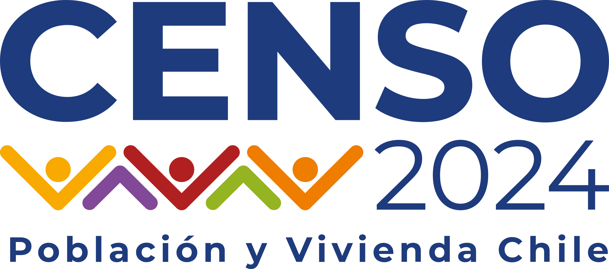
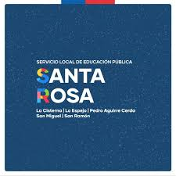
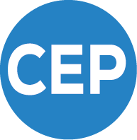
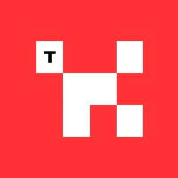

📄 Curriculum Vitae
Sociologist · Data Analyst · Researcher
🇨🇱 Spanish — Native
🇬🇧 English — B2
🇮🇹 Italian — C1
📄 Download CV (PDF)
Sociologist · Data Analyst · Researcher
I am a sociologist graduated with highest distinction from Universidad Diego Portales (2017–2021), specializing in data analysis, social research, and data science. My work sits at the intersection of quantitative methodology and digital humanities.
I currently work as a Data Analyst at the Santa Rosa Local Public Education Service (SLEP), where I am part of the systematization, visualization, and analysis of educational data for decision making.
My experience combines rigorous academic research, large-scale data processing, and innovative methodological design at institutions such as the National Statistics Institute (INE), the Centre for Public Studies (CEP), and in Fondecyt projects focused on economic governance and socio-environmental transitions.


Santa Rosa Local Public Education Service (SLEP) · September 2025 – present
Responsible for the systematization, visualization, and analysis of educational data. Dashboard and report design for regional educational management. View project page →

National Statistics Institute (INE) · May 2024 – June 2025
Responsible for processing, validation, and analysis of data for the 2024 Population and Housing Census. Statistical methodology design, large-scale database quality assurance, and technical reporting for decision making. View official Census 2024 site →
Universidad Diego Portales / Fondecyt · May 2024 – August 2025
“Governing uncertainty: grammars, actors, and devices for producing economic ‘stability’ in contemporary capitalism. A study on the Central Bank of Chile (2006–2022)”. Qualitative and quantitative data analysis on economic policies; construction of indicators to evaluate institutional stability devices.
Centre for Public Studies (CEP) · April 2023 – April 2024
Responsible for editorial management of the Voces del CEP bulletin, including coordination, organization, and publication of analysis articles on contemporary public issues. Full publication workflow management. Tracking of the second Chilean constitutional process (2023). Statistical systematization of electoral data and public opinion.

Centre for Public Studies (CEP) · August 2021 – April 2024
Socio-constitutional analysis C22. Digital humanities specialization in Chile’s first constitutional process. Discourse analysis, text data processing, and political information visualization. View project →
Independent academic research · 2025 – present
Quantitative research advisory on projects Insecurity amid Recovery and Economic Insecurity, Not Inequality? by Joaquín Prieto. Analysis using the ELSOC survey (COES) and the Social Welfare Survey (EBS, INE). Statistical modeling with R, methodological design support, and panel data analysis.
Tironi & Associates · August 2021 – March 2023
In charge of the constitutional bulletin 2022, a weekly monitoring product systematizing political and institutional information for corporate and public clients. Collection, cleaning, and analysis of political and institutional data.
Contributed to strategic consulting projects focused on data analysis for organizational diagnosis, public opinion monitoring, and communications strategy. Reports for public and private sector clients.

Universidad Diego Portales · March 2022 – March 2023
“Governing critical transitions in socio-ecological systems: the case of Chiloé, Chile”. Processing of qualitative and quantitative data for research on critical transitions in socio-environmental systems.
During my studies at Universidad Diego Portales I actively participated as a teaching assistant and thesis researcher, strengthening my training in methodology, social theory, and applied research.
Participation in a Fondecyt sociological research project, linking undergraduate thesis work with a funded research line.
Teaching support in quantitative methodology: descriptive and inferential statistics, and data analysis with specialized software.
Teaching support in research design, formulation of questions, hypotheses, and construction of theoretical frameworks.
Teaching support in contemporary sociological theory: author discussions, theoretical analysis exercises, and student feedback.
Teaching support in qualitative design and analysis: interviews, observation, ethnography, and discourse analysis.
Support in sociological analysis of contemporary social problems: inequality, stratification, and public policy.
Frei, R., Cordero, R., Lang, B., Rozas, J., & Rodríguez, J. P. (2024). “Claims of ownership, claims of dignity: Moral narratives on the right to housing in Chile’s constitutional referendum”. Journal of Language and Politics, 23(5), 723–746. https://doi.org/10.1075/jlp.24097.fre
Verónica Canales
Head of methodology and processing — 2024 Population & Housing Census · INE.
Master in Social Research (LSE).
📧 vacanalesg@ine.gob.cl
Aldo Mascareño
Senior Researcher at CEP · Editor-in-Chief of Estudios Públicos · Principal Investigator C22.
📧 amascareno@cepchile.cl
Francisco Espinoza
Consultant · Tironi & Associates.
Master in Political Science, Universidad de Chile.
📧 francisco.espinoza@tironi.cl